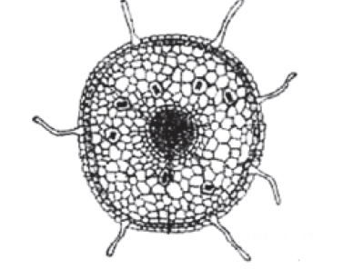

<div
  class="tab-pane fade show active"
  id="task-1-tab-content"
  role="tabpanel"
>
  <div id="task-1" class="task container"  data-task-number="1">
    <header class="d-flex justify-content-between task-header">
      <h1 class="task-title">Задание №1</h1>

      <div
        class="alert alert-success d-none"
        id="task-1-correct"
        role="alert"
      >
        &check; Выполнено верно
      </div>

      <div
        class="alert alert-danger d-none"
        id="task-1-wrong"
        role="alert"
      >
        &times; Выполнено неверно
      </div>
    </header>

    <div class="task-text">
      <p>
        На рисунке изображен поперечный срез корня. В какой из зон был
        сделан срез?
      </p>
      <p>В какой из зон был сделан срез?</p>
    </div>

    <div class="container">
      <div class="mx-auto task-image-container">
        
      </div>

      <form id="task-1-answers" class="task-answers">
        <label class="form-check task-variant" for="task-1-variants-1">
          <input
            class="form-check-input"
            type="radio"
            name="task-1-variants"
            id="task-1-variants-1"
            value="1"
          />
          проведения
        </label>

        <label class="form-check task-variant" for="task-1-variants-2">
          <input
            class="form-check-input"
            type="radio"
            name="task-1-variants"
            id="task-1-variants-2"
            value="2"
          />
          всасывания
        </label>

        <label class="form-check task-variant" for="task-1-variants-3">
          <input
            class="form-check-input"
            type="radio"
            name="task-1-variants"
            id="task-1-variants-3"
            value="3"
          />
          деления
        </label>

        <label class="form-check task-variant" for="task-1-variants-4">
          <input
            class="form-check-input"
            type="radio"
            name="task-1-variants"
            id="task-1-variants-4"
            value="4"
          />
          роста
        </label>
      </form>

      <button class="btn btn-success task-check">
        Проверить задание
      </button>
    </div>
  </div>
</div>